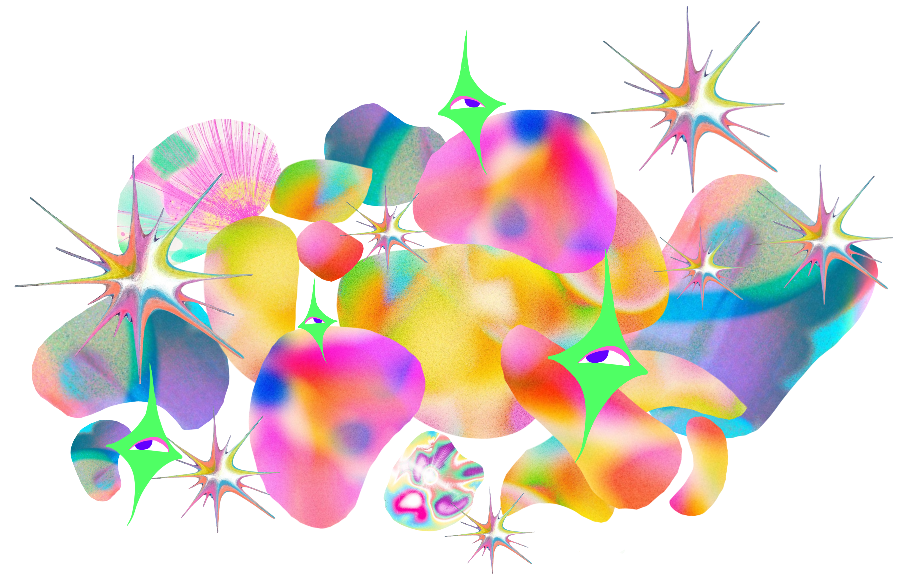
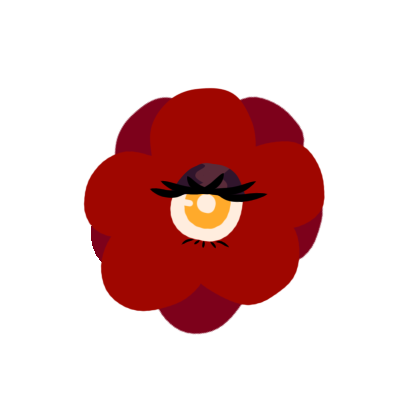
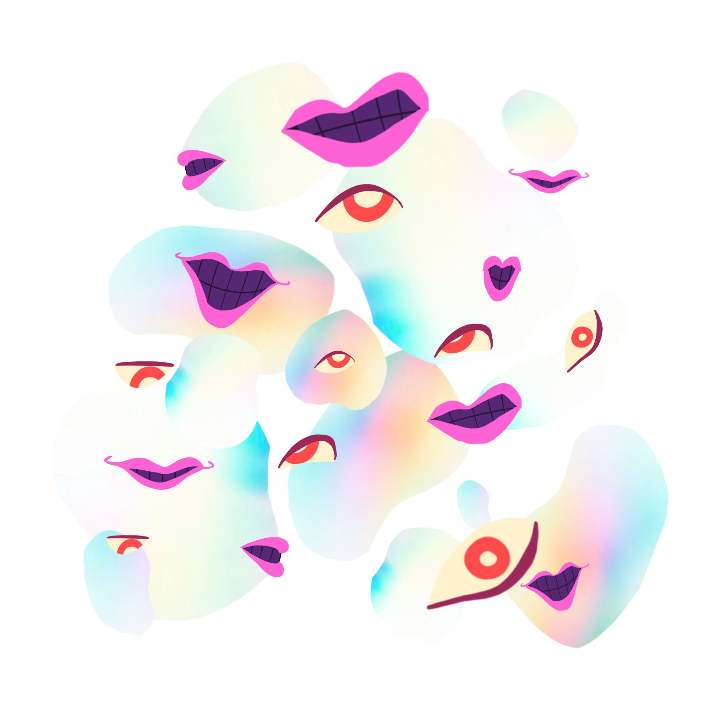

Before you explore deeper into Rose's mind, let this page be an insight into what goes on in Rose's mind as a digital media artist:
Rose is a second-year San Jose State University studio art undergraduate student. She strives to represent freedom within digital media by using it to openly express herself on public platforms. Self-expression is one of the core ideas used in her works. Through self-expression, her work may come off as abstract or representative, with a surreal style. Rose does this by freely manipulating the content she uses to make something new out of something old. The addition of interactivity plays a part in freedom, as she believes that this concept should be shared with her audience as well. Inspired by artists who explore more about the topic of living in reality and virtual reality, either through 2-dimensional, 3-dimensional forms, or coding, these ideas are what build towards her aspirations of becoming a hacker; someone who can get a computer to do anything. Flexibility in art is her key, as she refuses to be restricted by the limitations of her own mind. By embracing this freedom, she is able to face complex ideas and understand them her own way. Eventually, she reflects this understanding through creation in a world of pure imagination. This imagination would be Rose's Encephalon, a projection of her mind and the works she made that reflects the freedom she has taken advantage of through the digital interface.